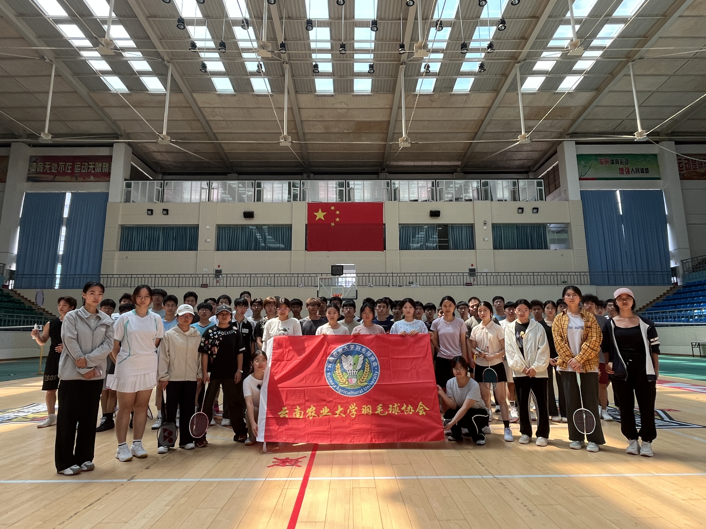
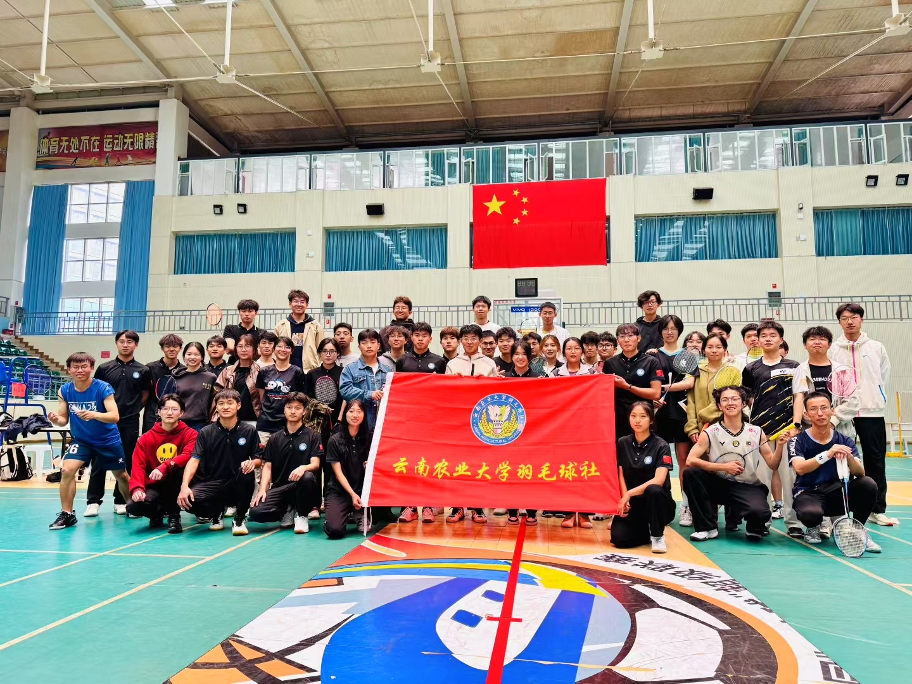
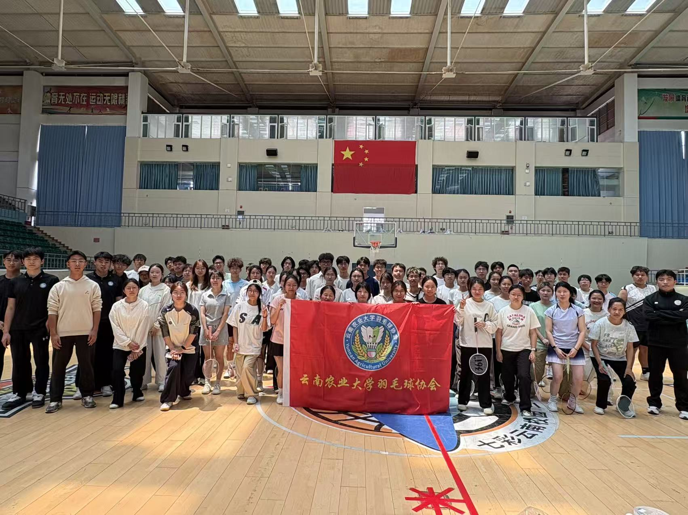
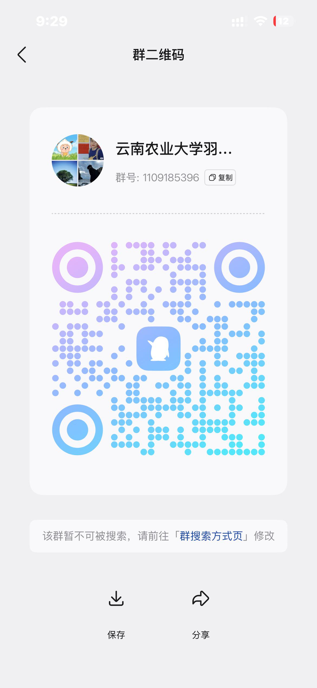

教学部
主要负责社团日常羽毛球教学训练，针对零基础社员开展入门培训，为高水平社员提供专项技术提升指导。
教学训练
我们是谁
本协会由校内羽毛球爱好者自发组建，依托学校体育育人平台应运而生，旨在填补校园专业化羽毛球运动普及与交流的空白，丰富学子课余体育生活、搭建运动交流桥梁。
协会以"以球会友、强身健体、深耕热爱、以赛促学"为宗旨，长期开展常态化基础技术训练、羽毛球知识科普、新老社员交流切磋、校内羽毛球赛事、校际友谊联赛等多元化文体活动，兼顾零基础社员入门教学与高水平社员专项提升。近年来，社团围绕校园体育文化建设、学生综合素质提升不断推进品牌建设，形成普惠性教学、竞技性培优、跨校性交流、沉浸式育人的特色。
未来，社团将持续丰富活动形式、优化训练体系、夯实社团管理机制，联动校内外体育资源，搭建更优质的运动交流与成长平台，推广羽毛球运动，弘扬团结拼搏、积极向上的体育精神。
组织架构
主要负责社团日常羽毛球教学训练，针对零基础社员开展入门培训，为高水平社员提供专项技术提升指导。
教学训练负责社团各类活动宣传，制作宣传素材、运营社团宣传渠道，对外展示社团风貌与活动成果。
宣传展示统筹社团各类文体、赛事交流活动落地执行，负责活动流程推进、现场统筹与秩序维护。
活动统筹负责社团日常管理、社员考勤、人员调配、活动策划筹备及社团内部事务统筹协调。
组织管理负责社团各类羽毛球赛事执裁，普及裁判规则，保障赛事公平、规范、有序开展。
赛事执裁活动剪影
从周末协会活动到社团杯赛事，从裁判员培训到耕读杯较量。
每一帧都是羽毛球协会的生动注脚。
品牌项目
开展羽毛球综合技能专项培训，包含赛事裁判知识讲解与基础技术教学。活动聚焦竞赛规则普及、执裁技能提升，并针对握拍、发球、击球等核心动作开展指导，纠正社员动作误区、夯实运动基础，提升社员竞技与执裁综合能力。
综合技能 · 裁判讲解 · 动作夯实
02本次培训涵盖裁判知识与羽毛球基础技术教学，帮助社员掌握竞赛规则、提升执裁能力，夯实握拍、发球等核心技术、纠正动作问题。同时增进成员交流，凝聚社团氛围，助力社团规范化发展与整体实力提升。
规则精通 · 技术夯实 · 氛围凝聚
03本次"耕读杯"羽毛球赛立足学校耕读育人理念，面向全校师生开展。赛事设置多项羽毛球竞技项目，秉持公平公正原则有序开展，旨在丰富校园文体生活，以体育赛事弘扬拼搏进取精神，搭建师生交流平台，厚植校园耕读体育文化。
耕读育人 · 公平公正 · 师生交流